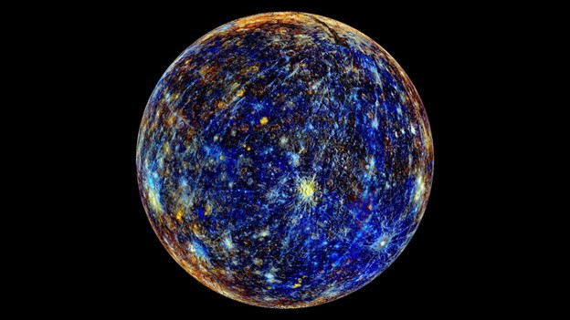

Меркурий
Меркурий очень маленький, у него нет атмосферы, в этом смысле он вообще очень похож на Луну. Подсолнечная сторона Меркурия нагрета до очень высокой температуры, а ночная сторона из-за отсутствия атмосферы охлаждается до очень низких температур.
Вернуться на главную